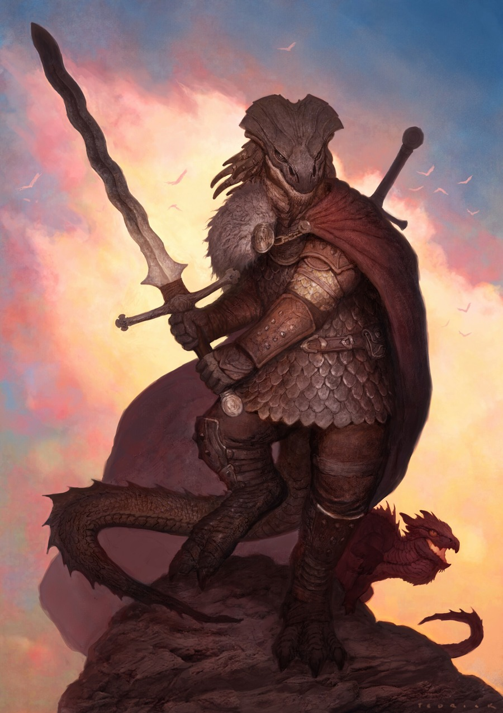
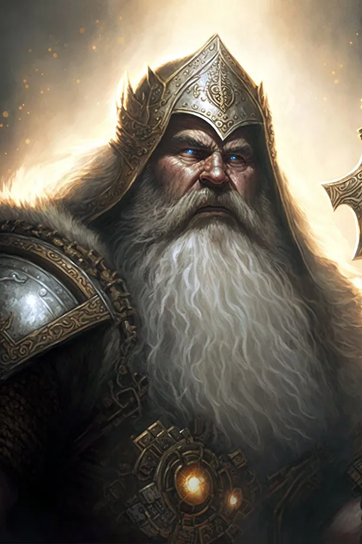
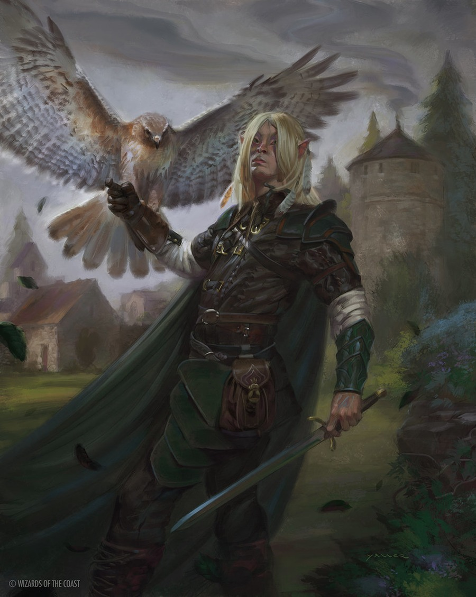
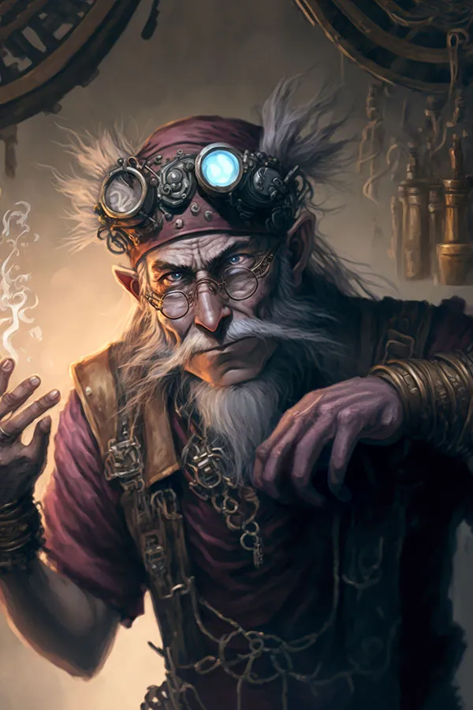
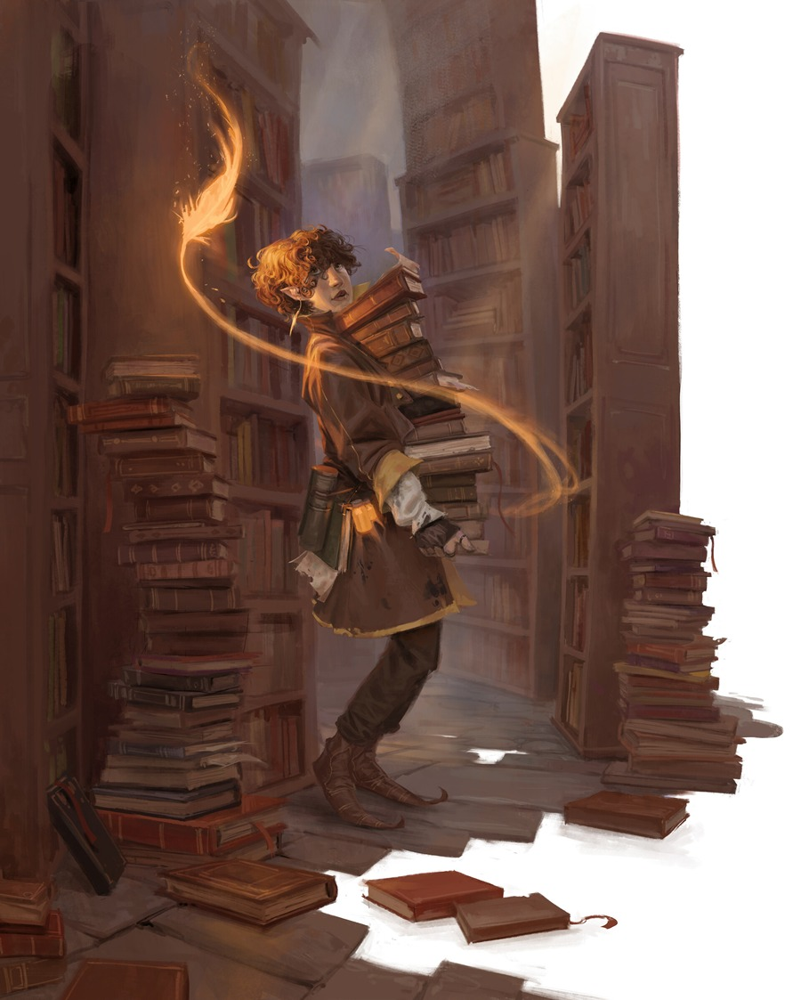
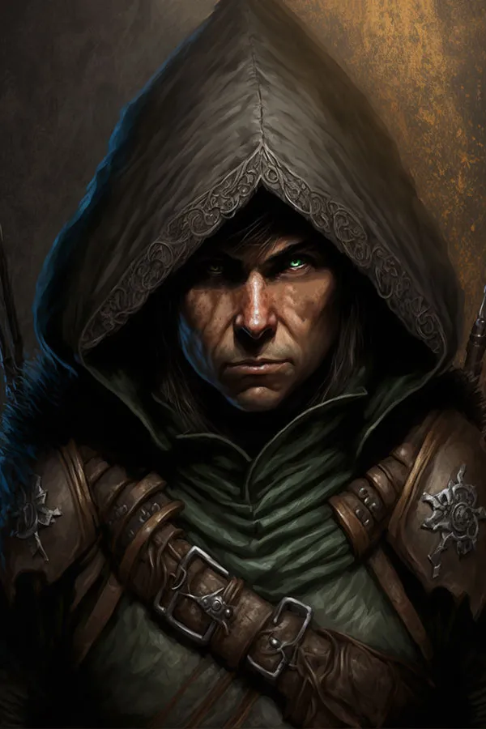
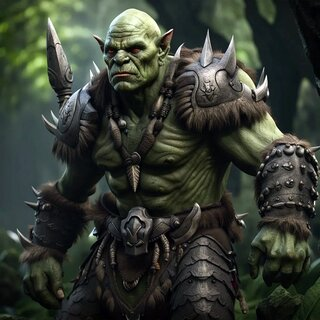
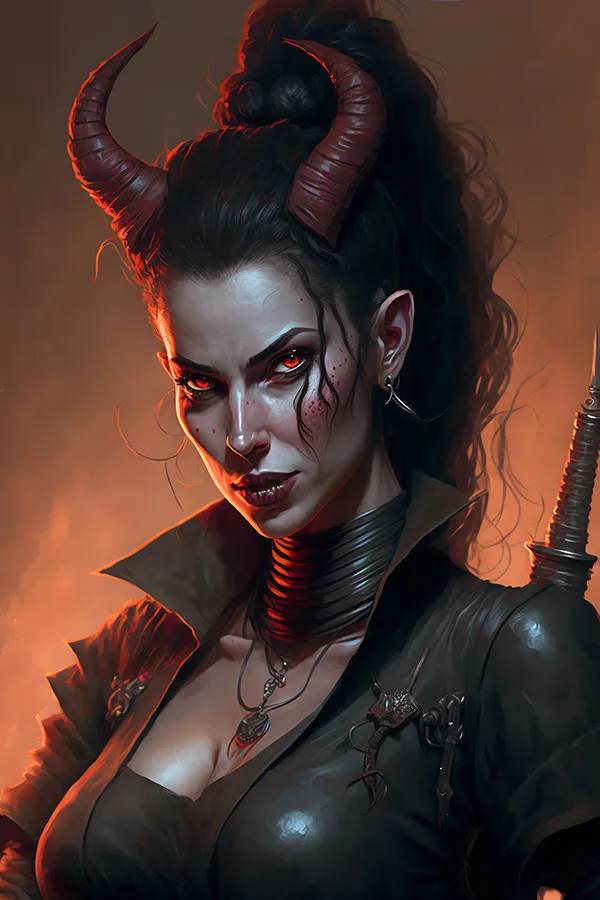

Picture Credit goes to
John Tedrick
The Scaled Dragonborn: Dragonborn are not technically dragons, they are more closely related to lizards. They lack the wings and
tail that they seemingly should have, but do retain the scaly skin and the ability to breath elements. Dragonborn typically
come from clans, based on a particular ancestry of Dragon. Different draconic ancestry leads to slight variations among
the Dragonborn as a people. Dragonborn are considered a more uncommon race of humanoid and some have never seen them before
in more rural parts of certain lands. Dragonborn have the breath weapon attack, and resistances of whatever draconic ancestry
they share. A blue dragonborn has an electric breath weapon, while a red dragonborn can breathe fire. Work with your DM
about what ancestry your Dragonborn comes from and what that means for your character.
Picture Credit goes to
MythJourneys.com
The Stoic Dwarf: Dwarves are a proud and stubborn race of short Humanoids. They are extremely loyal to allies,
while at the same time being moderately distrusting of strangers. As a general rule, Dwarves are less than civil to
most elves they meet however, there are exceptions. Dwarves can live to be just over 400 years old, and their memory
serves them well to the end. Dwarves have Darkvision, meaning they can see in dark light as though it were dim, but only
in shades of grey. Dwarves are also resistant to poisons, and gain proficiencies with hammers and axes. There are two main
types of Dwarf to choose from, the first is a Hill dwarf which is a typically wiser, and more hardy dwarf, and the second
is a Mountain dwarf, accustomed to rough conditions and much stronger than the Hill dwarves are.
Picture Credit goes to
Kieran Yanner
The Nimble Elf: Elves are, by nature, more dextrous and wise than most other humanoids and their physical features are
almost unearthly. Elves live for more than 700 years, and often this leads to a more big picture perspective that is
contrary to what many others with shorter life-spans think. Elves can often seem haughty to others due to that perspective
as well. Elves are associated with the Fey, a mystical realm of beauty and danger, and because of this they have some key features.
Elves have Darkvision, and the unique ability to withstand magical sleep, and the need to meditate for 4 hours rather than
sleep at night. There are three main types of Elves, the Wood Elf, a reclusive and nature focused denizen of the deep forest,
the High Elf, Elves that typically focus on cultivating magic within themselves, and finally the Dark Elf or Drow, Elves
that were centuries ago forced underground and are associated with the more sketchy side of life.
Picture Credit goes to
MythJourneys.com
The Tinkering Gnome: Gnomes are small folk like the Halflings are, but what they lack in size they more than make up for in
pure intelligence and dexterity. Gnomes are naturally gifted creators, and are often tinkering with mechanical devices. Gnomes can live
up to 500 years, and despite that they live each day as if it is their only chance to do what life has to offer. There are two
types of Gnomes. The first is a Forest Gnome, as the name suggests, these are Gnomes that reside in forests, Gnomes who live there
have a natural knack for illusion magic and natural stealth and speed. These Gnomes also have the innate ability to convey simple
ideas and thoughts to small beasts and critters such as squirrels or small birds. The other Gnomes tend to live outside of the forest,
whether underground or just within the settlements of other species. These Gnomes are called Rock Gnomes, and they make up the
majority of the Gnome population. Rock Gnomes are the inventors and tinkerers of the D&D world, and are the great innovators of their people.
They have the ability to create small trinkets with minimal effort, and often use these trinkets to help them achieve their current goals.
Picture Credit goes to
Ognjen Sporin
The Diplomatic Half-Elf: Half-Elves are the offspring of a Human and an Elf. As such they tend to not quite fit in with their
Elven ancestry since they do not live as long, and lack the same connection to the Fey. Many Half-Elves find more comfort among human cities,
and due to their Elven ancestry are usually more wise and steady than the rest of the population around them. Due to their dual nature,
Half-Elves find themselves on one of two sides of a coin. They usually end up as diplomats or as unaccepted wanderers. Thanks to their
Elven blood, they have Darkvision, and cannot be put to sleep. They also gain additional skills and extra languages.
Picture Credit goes to
MythJourneys.com
The Hidden Halfling: Halflings are small folk, standing about 3 feet high on average. Halflings tend to live within small cluster
groups in little towns. Halflings enjoy the good things in life, good food, a warm fire, and a comfy home surrounded by peaceful neighbors.
However, some Halflings long for something different, they long for Adventure. The inherent traits Halflings are born with
become very condusive to a life filled with adventure. Their dimunitve stature makes them adept at going unnoticed, and they seem
to have a natural luckiness that other humanoids lack. They are naturally brave and are resistant to fearful effects as well.
There are two types of Halfling, the first is a Lightfoot, the most common variety and the most adept at hiding in plain sight. The
second is the Stout Halfling, many believe that Stout halflings are closely related to dwarves. As such they are resistant to
poisons and tend to be more hardy than their lightfoot counterparts.
Picture Credit goes to
MythJourneys.com
The Brutal Half-Orc: Half-Orcs, like Half-Elves, have a human parent. Half-Orcs also come from an Orc parent as well.
The usual aggressiveness and hostility of the Orcs is not always abundant within Half-Orcs thanks to their Human heritage.
Although, the only real difference between Orcs and the Half-Orcs is that the latter tends to be smaller than the former.
Half-Orcs typically live up to about 75 years, reaching to over 6 feet tall. They have Darkvision, and are naturally intimidating.
Half-Orcs make excellent melee fighters thanks to their two features, Relentless Endurance and Savage Attacks. Relentless Endurance
allows the Half-Orc to continue fighting even when their hp drops to 0, and Savage Attacks increases the effectiveness of Critical Hits.
Picture Credit goes to
MythJourneys.com
The Devilish Tiefling: Tieflings are easily the most mistrusted and mistreated of the humanoids in this list. Tielfings are
literally devilish by nature. The exact circumstances vary, whether it is the literal offspring of a devil and humanoid,
or if the infernal nature comes from some form of deal or contract, the outcome is the same. Such a nature has its perks though.
As a Tielfing, those characters gain Darkvision, resistance to fire damage, and innate
magical abilities. Tieflings are not evil by nature, they vary in their tendencies just as much as humans do.